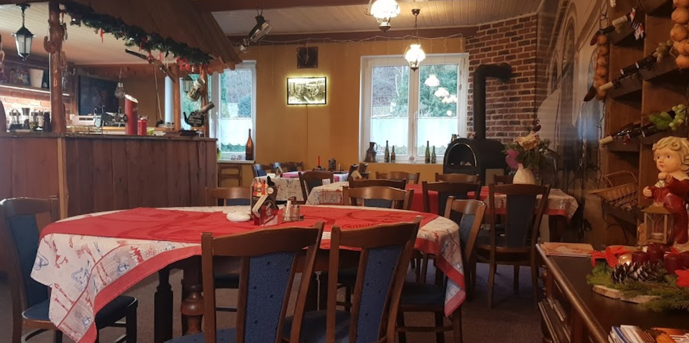
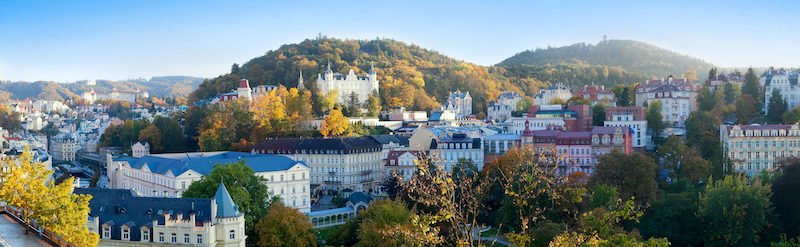

Vaříme tradiční dobrou českou kuchyni! Vždy u nás najdete dobrou porci masi, štouchané, vařené a pečené brambory, houskové nebo třeba plněné knedlíky. Pochutnáte si ale také na nabídce čerstvých ryb a salátů. Tak ať už je v denní nabídce kachna, pstruh, steak, nebo losos, u nás se dobře najíte.
Přijďte si odpočinout, ohřát se u komína, poslechnout si hučící řeknu a hlavně si pochutnat na dobrém jídle a vychlazeném pivě, nebo dobrém víně. A děti můžou dovádět na naší zahrádce a pískovištěm a sluzavkou.
Proč se jmenujeme zrovna Podkova? Podle staré legendy tu v 18. století Car Petr I. Veliký vlastníma rukama v železářském hamru v Březové ukoval podkovu pro svého koně. Car byl mimořádně fyzicky zdatný, oceňoval manuální zručnost a měl srdečný vztahem k prostým lidem. A určitě by si k nám zašel na jedno, nebo na dvě.
Nacházíme se jen pár minut od centra malebného města Karlovy Vary, v obci Březová. Právě tady protéka řeka Teplá, která pramení v Mariánských lázních a pokračuje podél nás na Kolonádu. A po jídle si můžete vyrazit na procházku po stopách Goethe, Karla Marxe, Fredericka Chopina do Karlovarských lesů.
